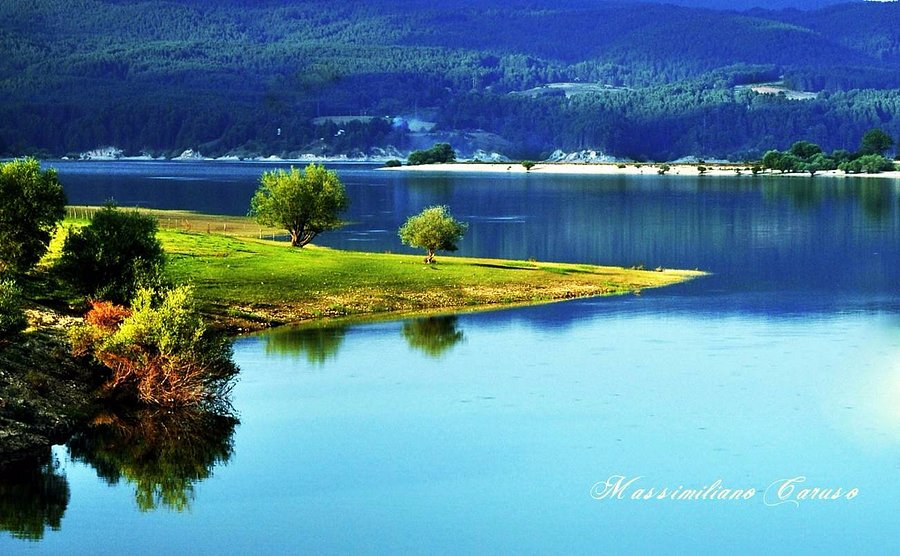

Parco Nazionale della Sila
“Scopri il simbolo indiscusso del Golfo di Napoli: un vulcano leggendario che domina storia e panorama.”
Il Parco Nazionale della Sila, situato nel cuore della Calabria, è un altopiano montuoso che si estende su circa 150.000 ettari, caratterizzato da boschi secolari, laghi pittoreschi e antichi borghi rurali.
Istituito come parco nel 2002, ma già riconosciuto come Riserva della Biosfera UNESCO, questo territorio vanta una storia millenaria, intrecciata con le tradizioni agro-pastorali e con un patrimonio culturale che comprende feste popolari, artigianato e enogastronomia di eccellenza.
I visitatori che scelgono di esplorare la Sila possono scoprire un ambiente montano unico nel contesto mediterraneo, in cui la natura e l’uomo hanno saputo convivere in modo armonioso per secoli.
Tra i luoghi di maggior richiamo figura il Lago Cecita, un grande invaso artificiale incastonato tra foreste di faggio e abete bianco.
Qui si trova anche il Centro Visita Cupone, gestito dall’Ente Parco, che offre percorsi didattici, un giardino geologico e recinti faunistici dove è possibile avvicinare cervi, daini e lupi in semi-cattività.
Un altro specchio d’acqua di grande fascino è il Lago Arvo, meta ideale per rilassarsi in barca o praticare sport acquatici a bassa intensità.
La Riserva Naturale del Fallistro, conosciuta anche come i Giganti della Sila, ospita monumentali pini larici e pini neri centenari.
Borghi come San Giovanni in Fiore, Camigliatello Silano e Lorica conservano tradizioni artigianali e culinarie, tra cui la lavorazione della lana, la tessitura e la produzione di formaggi tipici.
Attività
La Sila è coperta prevalentemente da foreste di faggio, pino laricio e abete bianco, che in autunno si tingono di colori spettacolari.
Le parti più alte dell’altopiano raggiungono circa 1.900 metri e ospitano specie endemiche, adattate a condizioni climatiche rigide per la latitudine.
L’area è un rifugio prezioso per il lupo appenninico, simbolo del parco, e per altre specie come il cervo e il capriolo, reintrodotti dopo aver rischiato l’estinzione locale.
Rapaci come la poiana e il falco pecchiaiolo sorvolano i cieli, mentre nei torrenti di montagna si possono trovare trote e altre specie di pesci d’acqua dolce. Il sottobosco è ricchissimo di funghi e di piante officinali, sfruttate dalla tradizione erboristica calabrese.
Questi elementi naturali si intrecciano con la presenza umana, dando vita a paesaggi pastorali dove pascoli e foreste convivono armoniosamente.

Flora e fauna
La Sila è coperta prevalentemente da foreste di faggio, pino laricio e abete bianco, che in autunno si tingono di colori spettacolari.
Le parti più alte dell’altopiano raggiungono circa 1.900 metri e ospitano specie endemiche, adattate a condizioni climatiche rigide per la latitudine.
L’area è un rifugio prezioso per il lupo appenninico, simbolo del parco, e per altre specie come il cervo e il capriolo, reintrodotti dopo aver rischiato l’estinzione locale.
Rapaci come la poiana e il falco pecchiaiolo sorvolano i cieli, mentre nei torrenti di montagna si possono trovare trote e altre specie di pesci d’acqua dolce. Il sottobosco è ricchissimo di funghi e di piante officinali, sfruttate dalla tradizione erboristica calabrese.
Questi elementi naturali si intrecciano con la presenza umana, dando vita a paesaggi pastorali dove pascoli e foreste convivono armoniosamente.
Informazioni utili
Il Parco Nazionale della Sila è facilmente raggiungibile dai principali centri urbani calabresi, come Cosenza e Catanzaro, utilizzando strade statali o regionali.
Per chi preferisce i mezzi pubblici, esistono bus che collegano alcune località silane alle città più grandi, ma l’auto risulta spesso la soluzione migliore per esplorare in libertà le varie zone del parco.
È consigliabile visitare la Sila in diverse stagioni: l’inverno offre paesaggi innevati ideali per gli sport sulla neve, la primavera e l’autunno regalano colori mozzafiato, mentre l’estate, con temperature più miti rispetto alla costa, permette di sfuggire alla calura e di fare escursioni in un clima gradevole.
Numerose strutture ricettive, dai rifugi ai B&B, garantiscono un buon livello di ospitalità, spesso accompagnato da una genuina accoglienza familiare. Prima di intraprendere un’escursione, è sempre bene informarsi sulle condizioni meteo e sulla presenza di eventuali restrizioni temporanee.
Nel rispetto della natura e delle norme del parco, è vietato abbandonare rifiuti, raccogliere piante o disturbare la fauna selvatica.
Grazie all’impegno costante dei residenti e delle istituzioni, il Parco Nazionale della Sila rimane un esempio di come la conservazione dell’ambiente possa conciliarsi con lo sviluppo del turismo sostenibile e con la valorizzazione di un patrimonio culturale unico nel suo genere.

Informazioni utili
Un aspetto affascinante riguarda la lavorazione della lana, che per secoli è stata una delle principali fonti di sostentamento delle comunità silane.
Ancora oggi, alcuni laboratori artigianali conservano metodi tradizionali di filatura e tintura, tramandati di generazione in generazione.
Chi visita il parco in primavera può assistere alla transumanza, il suggestivo trasferimento stagionale delle greggi, che mostra come la vita pastorale si intrecci con i ritmi naturali del territorio.
Anche sotto il profilo gastronomico, i prodotti caseari rivestono un ruolo essenziale: formaggi come il caciocavallo silano, la provola affumicata e il pecorino conquistano i palati dei visitatori, i quali possono degustarli abbinati a confetture o miele di castagno.
Questa sinergia tra natura e cultura fa sì che la Sila rappresenti non solo un’area di straordinario pregio ambientale, ma anche un luogo in cui le tradizioni locali contribuiscono a mantenere viva l’identità di un popolo profondamente legato alle proprie origini e alla terra che lo circonda.